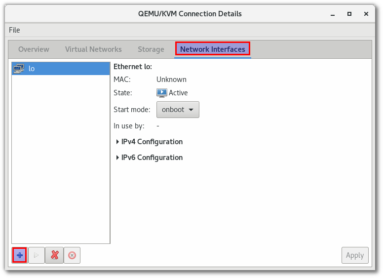
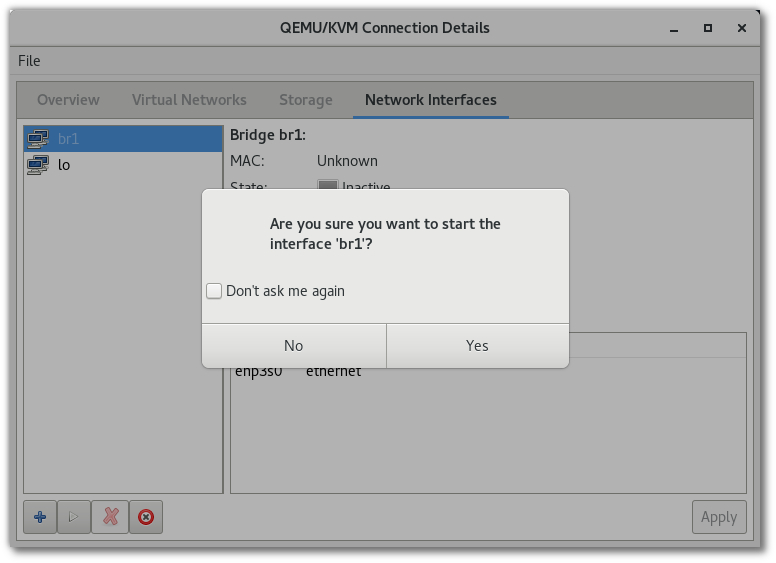

Bridge Networking KVM¶
setup on KVM¶
มีหลายวิธีสำหรับในการบริหารจัดการ Networking in KVM เพื่อที่จะให้ vm สามารถติดต่อออกสู่ภายนอกได้ โดย Default เป็นการเชื่อมต่อภายนอกแบบ NAT network โดยสร้าง Virtual network (virbr0) เพื่อให้ vm มาเกาะเพื่อออกไปสู่internet และ vm จะได้รับ ip จาก virtual network

Network Infrastructure¶
virsh command¶
libvirt command
sudo su -
virsh net-list
Name State Autostart Persistent
----------------------------------------------------------
default active yes yes
virsh net-dumpxml default
<network>
<name>default</name>
<uuid>88ec8022-2026-461b-bf66-7daaf33c8fc5</uuid>
<forward mode='nat'>
<nat>
<port start='1024' end='65535'/>
</nat>
</forward>
<bridge name='virbr0' stp='on' delay='0'/>
<mac address='52:54:00:c1:9f:ed'/>
<ip address='192.168.122.1' netmask='255.255.255.0'>
<dhcp>
<range start='192.168.122.2' end='192.168.122.254'/>
</dhcp>
</ip>
</network>
brctl command¶
linux bridge command
# brctl show
bridge name bridge id STP enabled interfaces
virbr0 8000.000000000000 yes
Create Bridge network¶
method1¶
create bridge with virt-manager gui ไปที่เมนู Edit > Connection Details เลือก เมนู Network Interfaces เมนู และกดเครื่องหมาย +

เลือก interface type: Bridge และ กด Forward
ในหน้าจอนี้ให้ทำการตั้งชื่อ bridge เป็น br1 และทำการเลือก physical network enp3s0` ที่อยู่ใน list เมื่อเลือกแล้วให้กด ``Finish เพื่อดำเนินสร้าง
ให้ทำการกดปุ่มดังรูปเพื่อเริ่ม start
verify¶
# ip link
...
6: br1: <NO-CARRIER,BROADCAST,MULTICAST,UP> mtu 1500 qdisc noqueue state DOWN mode DEFAULT group default qlen 1000
link/ether 5e:8c:6d:c0:9b:ed brd ff:ff:ff:ff:ff:ff
# brctl show
bridge name bridge id STP enabled interfaces
br1 8000.54ee758a8609 yes enp3s0
virbr0 8000.525400c19fed yes virbr0-nic
# ip a s br1
7: br1: <BROADCAST,MULTICAST,UP,LOWER_UP> mtu 1500 qdisc noqueue state UP group default qlen 1000
link/ether 54:ee:75:8a:86:09 brd ff:ff:ff:ff:ff:ff
inet 192.168.1.69/24 brd 192.168.1.255 scope global dynamic br1
valid_lft 86357sec preferred_lft 86357sec
inet6 fe80::56ee:75ff:fe8a:8609/64 scope link
valid_lft forever preferred_lft forever
# ip link show enp3s0
2: enp3s0: <BROADCAST,MULTICAST,UP,LOWER_UP> mtu 1500 qdisc fq_codel master br1 state UP mode DEFAULT group default qlen 1000
link/ether 54:ee:75:8a:86:09 brd ff:ff:ff:ff:ff:ff
# brctl showmacs br1
port no mac addr is local? ageing timer
1 54:ee:75:8a:86:09 yes 0.00
1 54:ee:75:8a:86:09 yes 0.00
1 bc:ee:7b:ea:67:28 no 0.00
auto generate¶
virt-manager จะทำหน้าสร้าง script ให้เองอัตโนมัติ
# cd /etc/sysconfig/network-scripts/
# cat ifcfg-br1
DEVICE="br1"
ONBOOT="no"
TYPE="Bridge"
BOOTPROTO="dhcp"
STP="on"
DELAY="0.0"
# cat ifcfg-enp3s0
DEVICE="enp3s0"
ONBOOT="no"
BRIDGE="br1"
# nmcli con show
NAME UUID TYPE DEVICE
Bridge br1 2ee981ca-5ff4-4f9b-03fe-32879aa3dc85 bridge br1

Kernel Parameter¶
add kernel parameter
# vi /etc/sysctl.conf
net.ipv4.ip_forward=1
net.bridge.bridge-nf-call-ip6tables = 0
net.bridge.bridge-nf-call-iptables = 0
net.bridge.bridge-nf-call-arptables = 0
//load parameter จะเกิด error
# sysctl -p
net.ipv4.ip_forward = 1
sysctl: cannot stat /proc/sys/net/bridge/bridge-nf-call-ip6tables: No such file or directory
sysctl: cannot stat /proc/sys/net/bridge/bridge-nf-call-iptables: No such file or directory
sysctl: cannot stat /proc/sys/net/bridge/bridge-nf-call-arptables: No such file or directory
fix error¶
โหลด br_netfilter kernel module โดยการใช้ command
# modprobe br_netfilter
# lsmod |grep br_netfilter
br_netfilter 24576 0
bridge 126976 2 br_netfilter,ebtable_broute
# sysctl -p
persistance load¶
//add module ตั้งชื่อเป็น netfilter.conf (เป็นอะไรก็ได้)
# vim /etc/modprobe.d/netfilter.conf
br_netfilter